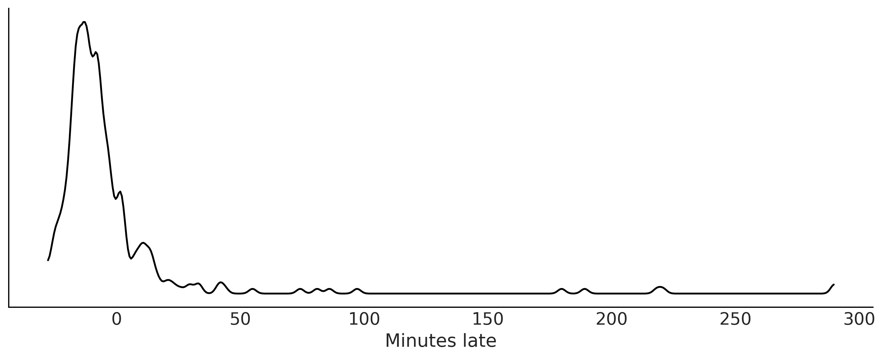
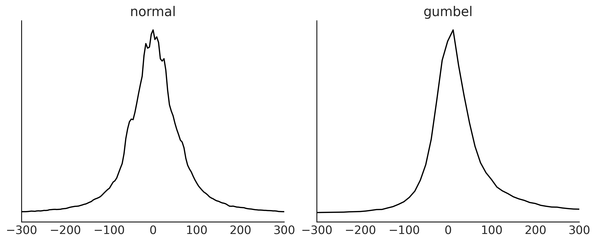
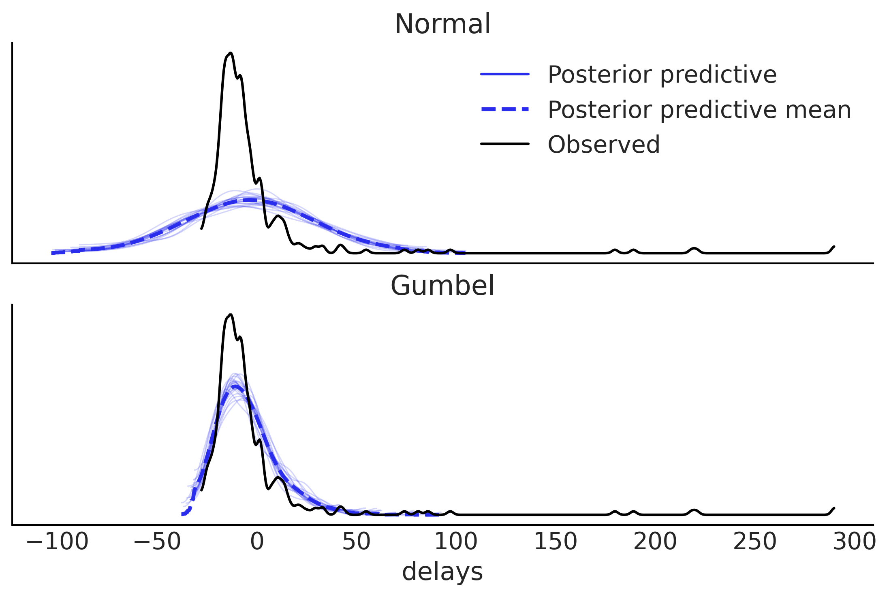
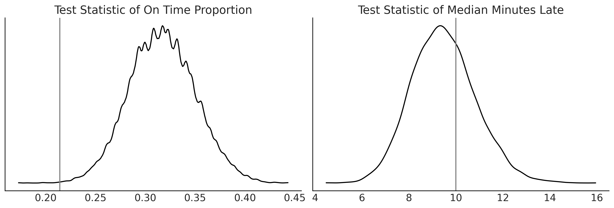
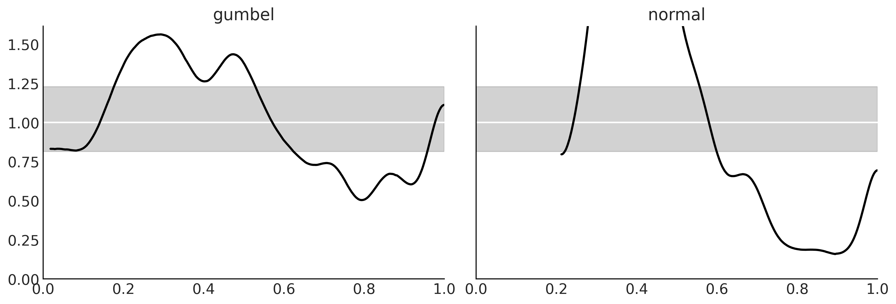
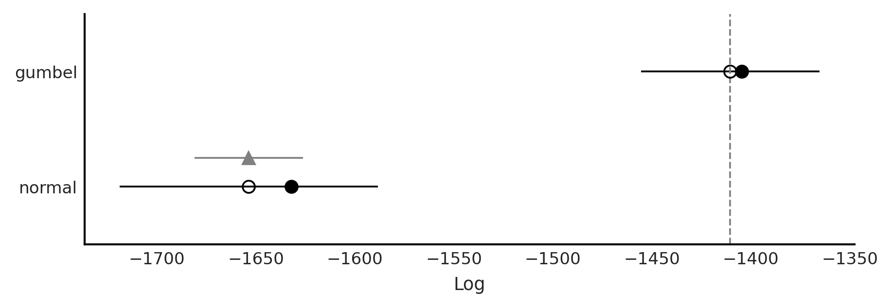
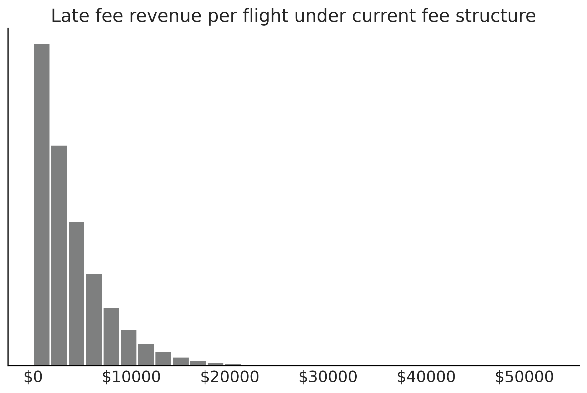
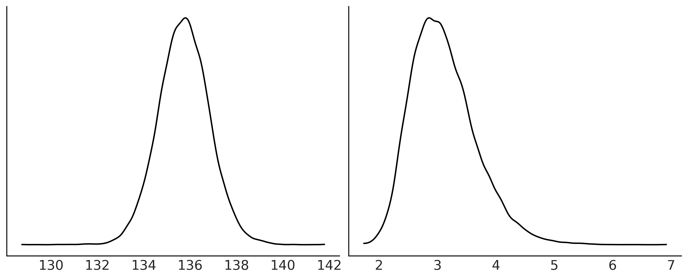
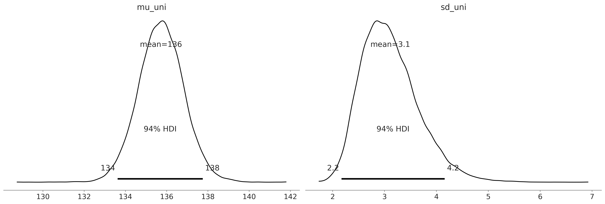
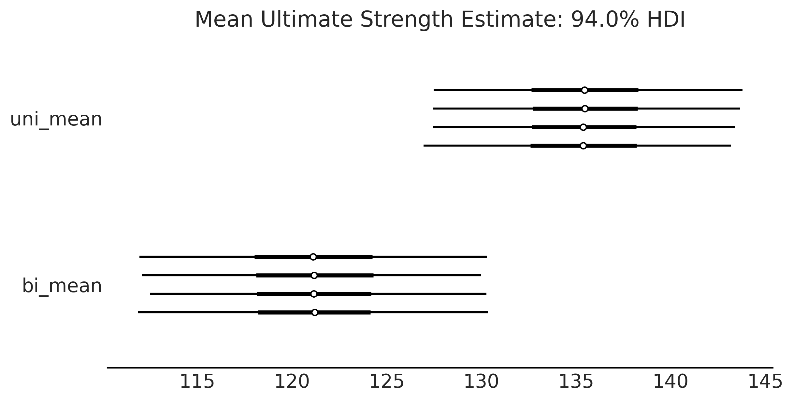

Code 9: End to End Bayesian Workflows
Contenido
Code 9: End to End Bayesian Workflows¶
This is a reference notebook for the book Bayesian Modeling and Computation in Python
The textbook is not needed to use or run this code, though the context and explanation is missing from this notebook.
If you’d like a copy it’s available from the CRC Press or from Amazon. ``
import pandas as pd
import arviz as az
import matplotlib.pyplot as plt
import pymc3 as pm
import numpy as np
import theano.tensor as tt
from scipy import stats, optimize
np.random.seed(seed=233423)
sampling_random_seed = 0
az.style.use("arviz-grayscale")
plt.rcParams['figure.dpi'] = 300
Making a Model and Probably More Than One¶
Code 9.1 and Figure 9.2¶
df = pd.read_csv("../data/948363589_T_ONTIME_MARKETING.zip", low_memory=False)
fig, ax = plt.subplots(figsize=(10,4))
msn_arrivals = df[(df["DEST"] == 'MSN') & df["ORIGIN"]
.isin(["MSP", "DTW"])]["ARR_DELAY"]
az.plot_kde(msn_arrivals.values, ax=ax)
ax.set_yticks([])
ax.set_xlabel("Minutes late")
plt.savefig('img/chp09/arrivaldistributions.png')

msn_arrivals.notnull().value_counts()
True 336
Name: ARR_DELAY, dtype: int64
Code 9.2¶
try:
# This is the real code, just try except block to allow for the whole notebook tor execute
with pm.Model() as normal_model:
normal_mu = ...
normal_sd = ...
normal_delay = pm.SkewNormal("delays", mu=normal_mu,
sd=normal_sd, observed=msn_arrivals)
with pm.Model() as skew_normal_model:
skew_normal_alpha = ...
skew_normal_mu = ...
skew_normal_sd = ...
skew_normal_delays = pm.SkewNormal("delays", mu=skew_normal_mu, sd=skew_normal_sd,
alpha=skew_normal_alpha, observed=msn_arrivals)
with pm.Model() as gumbel_model:
gumbel_beta = ...
gumbel_mu = ...
gumbel_delays = pm.Gumbel("delays", mu=gumbel_mu,
beta=gumbel_beta, observed=msn_arrivals)
except:
pass
Choosing Priors and Predictive Priors¶
Code 9.3¶
samples = 1000
with pm.Model() as normal_model:
normal_sd = pm.HalfStudentT("sd",sigma=60, nu=5)
normal_mu = pm.Normal("mu", 0, 30)
normal_delay = pm.Normal("delays", mu=normal_mu, sd=normal_sd, observed=msn_arrivals)
normal_prior_predictive = pm.sample_prior_predictive()
with pm.Model() as gumbel_model:
gumbel_beta = pm.HalfStudentT("beta", sigma=60, nu=5)
gumbel_mu = pm.Normal("mu", 0, 20)
gumbel_delays = pm.Gumbel("delays", mu=gumbel_mu, beta=gumbel_beta, observed=msn_arrivals)
gumbel_predictive = pm.sample_prior_predictive()
Figure 9.3¶
fig, axes = plt.subplots(1, 2, figsize=(10, 4))
prior_predictives = {"normal":normal_prior_predictive, "gumbel": gumbel_predictive }
for i, (label, prior_predictive) in enumerate(prior_predictives.items()):
data = prior_predictive["delays"].flatten()
az.plot_dist(data, ax=axes[i])
axes[i].set_yticks([])
axes[i].set_xlim(-300, 300)
axes[i].set_title(label)
fig.savefig("img/chp09/Airline_Prior_Predictive.png")

Inference and Inference Diagnostics¶
Code 9.4¶
with normal_model:
normal_delay_trace = pm.sample(random_seed=0, chains=2)
az.plot_rank(normal_delay_trace)
plt.savefig('img/chp09/rank_plot_bars_normal.png')
/tmp/ipykernel_141130/700159645.py:2: FutureWarning: In v4.0, pm.sample will return an `arviz.InferenceData` object instead of a `MultiTrace` by default. You can pass return_inferencedata=True or return_inferencedata=False to be safe and silence this warning.
normal_delay_trace = pm.sample(random_seed=0, chains=2)
Auto-assigning NUTS sampler...
Initializing NUTS using jitter+adapt_diag...
Multiprocess sampling (2 chains in 4 jobs)
NUTS: [mu, sd]
100.00% [4000/4000 00:01<00:00 Sampling 2 chains, 0 divergences]
Sampling 2 chains for 1_000 tune and 1_000 draw iterations (2_000 + 2_000 draws total) took 1 seconds.
Figure 9.5¶
with gumbel_model:
gumbel_delay_trace = pm.sample(random_seed=0, chains=2, draws=10000)
az.plot_rank(gumbel_delay_trace)
plt.savefig('img/chp09/rank_plot_bars_gumbel.png')
/tmp/ipykernel_141130/173437934.py:2: FutureWarning: In v4.0, pm.sample will return an `arviz.InferenceData` object instead of a `MultiTrace` by default. You can pass return_inferencedata=True or return_inferencedata=False to be safe and silence this warning.
gumbel_delay_trace = pm.sample(random_seed=0, chains=2, draws=10000)
Auto-assigning NUTS sampler...
Initializing NUTS using jitter+adapt_diag...
Multiprocess sampling (2 chains in 4 jobs)
NUTS: [mu, beta]
100.00% [22000/22000 00:05<00:00 Sampling 2 chains, 0 divergences]
Sampling 2 chains for 1_000 tune and 10_000 draw iterations (2_000 + 20_000 draws total) took 5 seconds.
Posterior Plots¶
Figure 9.6¶
az.plot_posterior(normal_delay_trace)
plt.savefig('img/chp09/posterior_plot_delays_normal.png');
/home/canyon/miniconda3/envs/bmcp/lib/python3.9/site-packages/arviz/data/io_pymc3.py:96: FutureWarning: Using `from_pymc3` without the model will be deprecated in a future release. Not using the model will return less accurate and less useful results. Make sure you use the model argument or call from_pymc3 within a model context.
warnings.warn(
Figure 9.7¶
az.plot_posterior(gumbel_delay_trace)
plt.savefig('img/chp09/posterior_plot_delays_gumbel.png');
/home/canyon/miniconda3/envs/bmcp/lib/python3.9/site-packages/arviz/data/io_pymc3.py:96: FutureWarning: Using `from_pymc3` without the model will be deprecated in a future release. Not using the model will return less accurate and less useful results. Make sure you use the model argument or call from_pymc3 within a model context.
warnings.warn(
Evaluating Posterior Predictive Distributions¶
Code 9.5¶
with normal_model:
normal_delay_trace = pm.sample(random_seed=0)
normal_post_pred_check = pm.sample_posterior_predictive(normal_delay_trace, random_seed=0)
normal_data = az.from_pymc3(trace=normal_delay_trace, posterior_predictive=normal_post_pred_check)
/tmp/ipykernel_141130/2703936732.py:2: FutureWarning: In v4.0, pm.sample will return an `arviz.InferenceData` object instead of a `MultiTrace` by default. You can pass return_inferencedata=True or return_inferencedata=False to be safe and silence this warning.
normal_delay_trace = pm.sample(random_seed=0)
Auto-assigning NUTS sampler...
Initializing NUTS using jitter+adapt_diag...
Multiprocess sampling (4 chains in 4 jobs)
NUTS: [mu, sd]
100.00% [8000/8000 00:01<00:00 Sampling 4 chains, 0 divergences]
Sampling 4 chains for 1_000 tune and 1_000 draw iterations (4_000 + 4_000 draws total) took 1 seconds.
100.00% [4000/4000 00:02<00:00]
fig, ax = plt.subplots()
az.plot_ppc(normal_data, observed=True, num_pp_samples=20, ax=ax)
array([<AxesSubplot:xlabel='delays'>], dtype=object)
Gumbel Posterior Predictive¶
with gumbel_model:
gumbel_post_pred_check = pm.sample_posterior_predictive(gumbel_delay_trace, random_seed=0)
gumbel_data = az.from_pymc3(trace=gumbel_delay_trace, posterior_predictive=gumbel_post_pred_check)
100.00% [20000/20000 00:05<00:00]
gumbel_data
arviz.InferenceData
-
- chain: 2
- draw: 10000
- chain(chain)int640 1
array([0, 1])
- draw(draw)int640 1 2 3 4 ... 9996 9997 9998 9999
array([ 0, 1, 2, ..., 9997, 9998, 9999])
- mu(chain, draw)float64-11.73 -11.73 ... -11.42 -12.0
array([[-11.72557194, -11.73207953, -11.88802422, ..., -11.6428163 , -12.32595871, -11.4247297 ], [-11.29462912, -11.69957094, -11.31910032, ..., -11.85237284, -11.41730207, -11.99712656]]) - beta(chain, draw)float6412.38 11.71 11.68 ... 12.35 11.91
array([[12.38449171, 11.70637023, 11.68447093, ..., 11.81750321, 10.59786029, 11.87224045], [12.23056892, 11.39189119, 11.98843791, ..., 12.31979166, 12.34786735, 11.90938563]])
- created_at :
- 2021-12-21T00:10:47.179307
- arviz_version :
- 0.11.2
- inference_library :
- pymc3
- inference_library_version :
- 3.11.4
- sampling_time :
- 5.16235613822937
- tuning_steps :
- 1000
<xarray.Dataset> Dimensions: (chain: 2, draw: 10000) Coordinates: * chain (chain) int64 0 1 * draw (draw) int64 0 1 2 3 4 5 6 7 ... 9993 9994 9995 9996 9997 9998 9999 Data variables: mu (chain, draw) float64 -11.73 -11.73 -11.89 ... -11.85 -11.42 -12.0 beta (chain, draw) float64 12.38 11.71 11.68 12.1 ... 12.32 12.35 11.91 Attributes: created_at: 2021-12-21T00:10:47.179307 arviz_version: 0.11.2 inference_library: pymc3 inference_library_version: 3.11.4 sampling_time: 5.16235613822937 tuning_steps: 1000xarray.Dataset -
- chain: 2
- draw: 10000
- delays_dim_0: 336
- chain(chain)int640 1
array([0, 1])
- draw(draw)int640 1 2 3 4 ... 9996 9997 9998 9999
array([ 0, 1, 2, ..., 9997, 9998, 9999])
- delays_dim_0(delays_dim_0)int640 1 2 3 4 5 ... 331 332 333 334 335
array([ 0, 1, 2, ..., 333, 334, 335])
- delays(chain, draw, delays_dim_0)float64-5.399 1.811 ... -2.091 -8.277
array([[[ -5.39918599, 1.81073042, -3.2946677 , ..., 0.89360377, 5.43627698, 5.35459582], [-15.23911763, -11.54325394, -4.33765624, ..., -2.32076318, -10.73548035, -9.68943292], [ -3.47878177, -23.31334874, 7.18210296, ..., 12.09764485, -6.92212629, -26.47491552], ..., [ 19.62744814, -21.42421504, 10.95284825, ..., -9.71709578, 5.33410699, -38.74991123], [ -8.76684998, 2.28239284, 0.91624338, ..., -0.84032181, -26.65570676, -21.96005532], [ 18.23822167, -23.22701479, -24.07056654, ..., 7.50796401, 9.20984217, -10.16932615]], [[-25.08656409, 32.29002703, 1.4286298 , ..., -22.77197238, 6.02545546, -26.94436752], [-13.05694047, 11.19104228, -8.43757867, ..., -8.17775168, -21.09001986, -9.65141766], [ 13.68550605, -10.24803391, -19.32074521, ..., -10.30054528, -18.63370128, -5.15608323], ..., [ -4.68054661, -4.30929148, 14.00107491, ..., -5.42925437, 40.87039118, -12.66036448], [-11.35656758, -18.34786932, 10.53413128, ..., 3.04157587, -9.58325394, 10.6535498 ], [ 15.59245375, -24.92554845, -18.61216491, ..., -2.3732099 , -2.09126357, -8.27722622]]])
- created_at :
- 2021-12-21T00:10:47.779134
- arviz_version :
- 0.11.2
- inference_library :
- pymc3
- inference_library_version :
- 3.11.4
<xarray.Dataset> Dimensions: (chain: 2, draw: 10000, delays_dim_0: 336) Coordinates: * chain (chain) int64 0 1 * draw (draw) int64 0 1 2 3 4 5 6 ... 9994 9995 9996 9997 9998 9999 * delays_dim_0 (delays_dim_0) int64 0 1 2 3 4 5 6 ... 330 331 332 333 334 335 Data variables: delays (chain, draw, delays_dim_0) float64 -5.399 1.811 ... -8.277 Attributes: created_at: 2021-12-21T00:10:47.779134 arviz_version: 0.11.2 inference_library: pymc3 inference_library_version: 3.11.4xarray.Dataset -
- chain: 2
- draw: 10000
- delays_dim_0: 336
- chain(chain)int640 1
array([0, 1])
- draw(draw)int640 1 2 3 4 ... 9996 9997 9998 9999
array([ 0, 1, 2, ..., 9997, 9998, 9999])
- delays_dim_0(delays_dim_0)int640 1 2 3 4 5 ... 331 332 333 334 335
array([ 0, 1, 2, ..., 333, 334, 335])
- delays(chain, draw, delays_dim_0)float64-3.534 -3.902 ... -3.621 -3.579
array([[[-3.53439048, -3.90187189, -4.44373716, ..., -3.53897951, -3.64047448, -3.62150725], [-3.48017251, -3.88477064, -4.47279416, ..., -3.4853666 , -3.59787227, -3.57844796], [-3.47562643, -3.89313767, -4.48514071, ..., -3.4864381 , -3.6023663 , -3.56959192], ..., [-3.49086634, -3.88248397, -4.46118802, ..., -3.49282385, -3.60169973, -3.58979294], [-3.37381152, -3.90245873, -4.58894495, ..., -3.40512617, -3.55286045, -3.47393295], [-3.49952651, -3.87189112, -4.44334915, ..., -3.49370874, -3.59743377, -3.6039606 ]], [[-3.53031076, -3.87513381, -4.42036493, ..., -3.52048713, -3.61630371, -3.63183326], [-3.45473541, -3.87567622, -4.48657637, ..., -3.4588874 , -3.5763833 , -3.56008234], [-3.51091932, -3.86939578, -4.431172 , ..., -3.50150279, -3.6013569 , -3.61626774], ..., [-3.52732413, -3.90675173, -4.45466208, ..., -3.53605546, -3.64079446, -3.61204157], [-3.53696591, -3.88492316, -4.42446686, ..., -3.53145411, -3.62788608, -3.63300298], [-3.49229563, -3.90442959, -4.48207113, ..., -3.50649604, -3.62055516, -3.57932918]]])
- created_at :
- 2021-12-21T00:10:47.778088
- arviz_version :
- 0.11.2
- inference_library :
- pymc3
- inference_library_version :
- 3.11.4
<xarray.Dataset> Dimensions: (chain: 2, draw: 10000, delays_dim_0: 336) Coordinates: * chain (chain) int64 0 1 * draw (draw) int64 0 1 2 3 4 5 6 ... 9994 9995 9996 9997 9998 9999 * delays_dim_0 (delays_dim_0) int64 0 1 2 3 4 5 6 ... 330 331 332 333 334 335 Data variables: delays (chain, draw, delays_dim_0) float64 -3.534 -3.902 ... -3.579 Attributes: created_at: 2021-12-21T00:10:47.778088 arviz_version: 0.11.2 inference_library: pymc3 inference_library_version: 3.11.4xarray.Dataset -
- chain: 2
- draw: 10000
- chain(chain)int640 1
array([0, 1])
- draw(draw)int640 1 2 3 4 ... 9996 9997 9998 9999
array([ 0, 1, 2, ..., 9997, 9998, 9999])
- energy(chain, draw)float641.414e+03 1.414e+03 ... 1.413e+03
array([[1413.56759516, 1413.66645317, 1412.51776952, ..., 1413.15605825, 1417.31906336, 1415.53834784], [1415.43695773, 1413.68710622, 1412.78072417, ..., 1413.29482656, 1413.0416688 , 1413.24467953]]) - lp(chain, draw)float64-1.413e+03 ... -1.413e+03
array([[-1412.92279264, -1412.39209418, -1412.50542257, ..., -1412.33552248, -1415.65781452, -1412.31284368], [-1412.55101939, -1412.67841777, -1412.3605102 , ..., -1412.93059786, -1412.707442 , -1412.64082321]]) - diverging(chain, draw)boolFalse False False ... False False
array([[False, False, False, ..., False, False, False], [False, False, False, ..., False, False, False]]) - perf_counter_diff(chain, draw)float640.0001988 0.0003637 ... 0.000469
array([[0.00019882, 0.00036374, 0.00019469, ..., 0.00035138, 0.00035864, 0.00039643], [0.00037191, 0.00037544, 0.00035086, ..., 0.00042214, 0.00052719, 0.00046898]]) - perf_counter_start(chain, draw)float646.522e+04 6.522e+04 ... 6.522e+04
array([[65216.67777274, 65216.67806359, 65216.67851561, ..., 65221.25840127, 65221.25884183, 65221.25932031], [65216.74270444, 65216.74317043, 65216.74363424, ..., 65221.18862741, 65221.18914466, 65221.18976756]]) - acceptance_rate(chain, draw)float641.0 0.8449 0.9614 ... 1.0 0.9627
array([[1. , 0.84489221, 0.96144218, ..., 1. , 0.50463615, 1. ], [0.49189175, 0.75136164, 1. , ..., 1. , 1. , 0.96273944]]) - step_size_bar(chain, draw)float641.091 1.091 1.091 ... 1.088 1.088
array([[1.09064275, 1.09064275, 1.09064275, ..., 1.09064275, 1.09064275, 1.09064275], [1.08797744, 1.08797744, 1.08797744, ..., 1.08797744, 1.08797744, 1.08797744]]) - process_time_diff(chain, draw)float640.0001989 0.0003638 ... 0.0004691
array([[0.00019886, 0.00036381, 0.00019477, ..., 0.00035144, 0.00035879, 0.00039647], [0.00037207, 0.00037544, 0.00035088, ..., 0.00042222, 0.00052731, 0.0004691 ]]) - step_size(chain, draw)float640.9806 0.9806 ... 1.028 1.028
array([[0.98061996, 0.98061996, 0.98061996, ..., 0.98061996, 0.98061996, 0.98061996], [1.02810693, 1.02810693, 1.02810693, ..., 1.02810693, 1.02810693, 1.02810693]]) - tree_depth(chain, draw)int641 2 1 2 2 2 2 2 ... 2 2 1 2 2 2 2 2
array([[1, 2, 1, ..., 2, 2, 2], [2, 2, 2, ..., 2, 2, 2]]) - n_steps(chain, draw)float641.0 3.0 1.0 3.0 ... 3.0 3.0 3.0 3.0
array([[1., 3., 1., ..., 3., 3., 3.], [3., 3., 3., ..., 3., 3., 3.]]) - energy_error(chain, draw)float64-0.2766 -0.2273 ... -0.02728
array([[-0.27655277, -0.22733678, 0.03932085, ..., -0.32739556, 0.58803383, -0.72010242], [ 0. , -0.04548605, -0.10043066, ..., -0.16728129, -0.09807469, -0.02727579]]) - max_energy_error(chain, draw)float64-0.2766 0.4516 ... -0.209 0.1007
array([[-0.27655277, 0.45164441, 0.03932085, ..., -0.32739556, 1.32713678, -0.72010242], [ 0.73470561, 0.77202735, -0.10043066, ..., -0.39173419, -0.20904696, 0.10073477]])
- created_at :
- 2021-12-21T00:10:47.183586
- arviz_version :
- 0.11.2
- inference_library :
- pymc3
- inference_library_version :
- 3.11.4
- sampling_time :
- 5.16235613822937
- tuning_steps :
- 1000
<xarray.Dataset> Dimensions: (chain: 2, draw: 10000) Coordinates: * chain (chain) int64 0 1 * draw (draw) int64 0 1 2 3 4 5 ... 9995 9996 9997 9998 9999 Data variables: (12/13) energy (chain, draw) float64 1.414e+03 1.414e+03 ... 1.413e+03 lp (chain, draw) float64 -1.413e+03 ... -1.413e+03 diverging (chain, draw) bool False False False ... False False perf_counter_diff (chain, draw) float64 0.0001988 0.0003637 ... 0.000469 perf_counter_start (chain, draw) float64 6.522e+04 6.522e+04 ... 6.522e+04 acceptance_rate (chain, draw) float64 1.0 0.8449 0.9614 ... 1.0 0.9627 ... ... process_time_diff (chain, draw) float64 0.0001989 0.0003638 ... 0.0004691 step_size (chain, draw) float64 0.9806 0.9806 ... 1.028 1.028 tree_depth (chain, draw) int64 1 2 1 2 2 2 2 2 ... 2 2 1 2 2 2 2 2 n_steps (chain, draw) float64 1.0 3.0 1.0 3.0 ... 3.0 3.0 3.0 energy_error (chain, draw) float64 -0.2766 -0.2273 ... -0.02728 max_energy_error (chain, draw) float64 -0.2766 0.4516 ... -0.209 0.1007 Attributes: created_at: 2021-12-21T00:10:47.183586 arviz_version: 0.11.2 inference_library: pymc3 inference_library_version: 3.11.4 sampling_time: 5.16235613822937 tuning_steps: 1000xarray.Dataset -
- delays_dim_0: 336
- delays_dim_0(delays_dim_0)int640 1 2 3 4 5 ... 331 332 333 334 335
array([ 0, 1, 2, ..., 333, 334, 335])
- delays(delays_dim_0)float64-14.0 1.0 10.0 ... -9.0 -5.0 -17.0
array([-14., 1., 10., -15., -19., -4., -11., 15., 13., 41., -14., -25., -5., -19., -23., -15., -5., -10., -13., 2., -1., 8., -7., -13., -3., -2., -6., -6., -5., -3., -2., 3., 1., 5., -7., 7., -2., -3., -7., -10., -9., -6., 20., -9., 30., -12., -2., -8., -6., 11., 13., -5., -23., -11., -12., 3., -16., 23., -2., -14., -8., -11., 3., -23., -6., -15., -10., 55., -4., -1., -14., -19., 11., -15., -12., -18., -14., 8., 11., 6., 0., -19., -23., -11., -20., -20., -22., -9., 6., -17., 2., -15., -13., -13., -20., -18., -15., -13., -25., -5., -9., -2., -25., -5., -5., -21., 97., -14., -19., -28., -17., 26., 3., -8., 2., 8., 12., -18., -16., -16., -8., 1., 3., -4., -8., 8., -17., 44., -15., -13., -24., -16., -3., -10., -8., -8., -21., -13., -9., -13., -20., -7., -9., -16., -16., -23., -17., -16., -12., -22., -18., -7., -18., -21., -11., -11., -13., 290., 218., -21., -20., -8., -14., -17., 221., -9., -12., -8., -3., -13., -7., 3., 1., 2., 33., -6., -10., -9., 1., 0., 180., 81., -12., -26., -11., -19., -13., -5., -12., -6., -15., -14., 1., 0., -8., -5., -4., 0., -20., -13., -10., -25., -10., -19., -4., -23., -16., -7., -16., 12., 15., 11., -9., 13., -7., 2., -14., -10., -17., -15., -25., -25., -14., -16., -27., -13., -7., -17., -14., 86., -24., -17., -16., 10., 1., -18., 189., 3., -10., -11., -13., -9., -15., -4., -9., 17., -18., -9., -13., -17., -9., -15., -16., -13., -11., -7., -8., -15., 33., -24., 17., 10., 4., -10., -3., -2., 42., -5., 14., 20., -11., -14., -8., -7., 29., -12., -14., -7., -18., 14., 14., -22., -5., -19., -15., -18., -19., -9., -16., -12., -12., -12., -6., -11., -8., -18., -12., -16., -7., -14., -15., -3., -8., 9., -13., -15., -10., 9., -18., 22., -11., -17., -17., -2., -12., -25., 3., -12., 74., -17., -7., -14., -8., -8., -12., 0., -7., -6., -21., -16., -15., -2., -13., -9., -5., -17.])
- created_at :
- 2021-12-21T00:10:47.779793
- arviz_version :
- 0.11.2
- inference_library :
- pymc3
- inference_library_version :
- 3.11.4
<xarray.Dataset> Dimensions: (delays_dim_0: 336) Coordinates: * delays_dim_0 (delays_dim_0) int64 0 1 2 3 4 5 6 ... 330 331 332 333 334 335 Data variables: delays (delays_dim_0) float64 -14.0 1.0 10.0 ... -9.0 -5.0 -17.0 Attributes: created_at: 2021-12-21T00:10:47.779793 arviz_version: 0.11.2 inference_library: pymc3 inference_library_version: 3.11.4xarray.Dataset
Figure 9.8¶
fig, ax = plt.subplots(2,1, sharex=True)
az.plot_ppc(normal_data, observed=False, num_pp_samples=20, ax=ax[0], color="C4")
az.plot_kde(msn_arrivals, ax=ax[0], label="Observed");
az.plot_ppc(gumbel_data, observed=False, num_pp_samples=20, ax=ax[1], color="C4")
az.plot_kde(msn_arrivals, ax=ax[1], label="Observed");
ax[0].set_title("Normal")
ax[0].set_xlabel("")
ax[1].set_title("Gumbel")
ax[1].legend().remove()
plt.savefig("img/chp09/delays_model_posterior_predictive.png")

Figure 9.9¶
gumbel_late = gumbel_data.posterior_predictive["delays"].values.reshape(-1, 336).copy()
dist_of_late = (gumbel_late > 0).sum(axis=1) / 336
fig, axes = plt.subplots(1,2, figsize=(12,4))
gumbel_late = gumbel_data.posterior_predictive["delays"].values.reshape(-1, 336).copy()
dist_of_late = (gumbel_late > 0).sum(axis=1) / 336
az.plot_dist(dist_of_late, ax=axes[0])
percent_observed_late = (msn_arrivals > 0).sum() / 336
axes[0].axvline(percent_observed_late, c="gray")
axes[0].set_title("Test Statistic of On Time Proportion")
axes[0].set_yticks([])
gumbel_late[gumbel_late < 0] = np.nan
median_lateness = np.nanmedian(gumbel_late, axis=1)
az.plot_dist(median_lateness, ax=axes[1])
median_time_observed_late = msn_arrivals[msn_arrivals >= 0].median()
axes[1].axvline(median_time_observed_late, c="gray")
axes[1].set_title("Test Statistic of Median Minutes Late")
axes[1].set_yticks([])
plt.savefig("img/chp09/arrival_test_statistics_for_gumbel_posterior_predictive.png")

Model Comparison¶
Code 9.6¶
compare_dict = {"normal": normal_data,"gumbel": gumbel_data}
comp = az.compare(compare_dict, ic="loo")
comp
/home/canyon/miniconda3/envs/bmcp/lib/python3.9/site-packages/arviz/stats/stats.py:145: UserWarning: The default method used to estimate the weights for each model,has changed from BB-pseudo-BMA to stacking
warnings.warn(
/home/canyon/miniconda3/envs/bmcp/lib/python3.9/site-packages/arviz/stats/stats.py:655: UserWarning: Estimated shape parameter of Pareto distribution is greater than 0.7 for one or more samples. You should consider using a more robust model, this is because importance sampling is less likely to work well if the marginal posterior and LOO posterior are very different. This is more likely to happen with a non-robust model and highly influential observations.
warnings.warn(
| rank | loo | p_loo | d_loo | weight | se | dse | warning | loo_scale | |
|---|---|---|---|---|---|---|---|---|---|
| gumbel | 0 | -1410.341706 | 5.846255 | 0.000000 | 1.000000e+00 | 45.130865 | 0.000000 | False | log |
| normal | 1 | -1653.653643 | 21.616843 | 243.311937 | 1.761862e-10 | 65.189335 | 27.416848 | True | log |
Figure 9.10¶
_, axes = plt.subplots(1, 2, figsize=(12, 4), sharey=True)
for label, model, ax in zip(("gumbel", "normal"),(gumbel_data, normal_data), axes):
az.plot_loo_pit(model, y="delays", legend=False, use_hdi=True, ax=ax)
ax.set_title(label)
plt.savefig('img/chp09/loo_pit_delays.png')

Table 9.1¶
cmp_dict = {"gumbel": gumbel_data,
"normal": normal_data}
cmp = az.compare(cmp_dict)
cmp
/home/canyon/miniconda3/envs/bmcp/lib/python3.9/site-packages/arviz/stats/stats.py:145: UserWarning: The default method used to estimate the weights for each model,has changed from BB-pseudo-BMA to stacking
warnings.warn(
/home/canyon/miniconda3/envs/bmcp/lib/python3.9/site-packages/arviz/stats/stats.py:655: UserWarning: Estimated shape parameter of Pareto distribution is greater than 0.7 for one or more samples. You should consider using a more robust model, this is because importance sampling is less likely to work well if the marginal posterior and LOO posterior are very different. This is more likely to happen with a non-robust model and highly influential observations.
warnings.warn(
| rank | loo | p_loo | d_loo | weight | se | dse | warning | loo_scale | |
|---|---|---|---|---|---|---|---|---|---|
| gumbel | 0 | -1410.341706 | 5.846255 | 0.000000 | 1.000000e+00 | 45.130865 | 0.000000 | False | log |
| normal | 1 | -1653.653643 | 21.616843 | 243.311937 | 1.761862e-10 | 65.189335 | 27.416848 | True | log |
Code 9.7 and Figure 9.12¶
az.plot_compare(cmp)
plt.savefig("img/chp09/model_comparison_airlines.png")

Figure 9.12¶
gumbel_loo = az.loo(gumbel_data, pointwise=True)
normal_loo = az.loo(normal_data, pointwise=True)
/home/canyon/miniconda3/envs/bmcp/lib/python3.9/site-packages/arviz/stats/stats.py:655: UserWarning: Estimated shape parameter of Pareto distribution is greater than 0.7 for one or more samples. You should consider using a more robust model, this is because importance sampling is less likely to work well if the marginal posterior and LOO posterior are very different. This is more likely to happen with a non-robust model and highly influential observations.
warnings.warn(
fig = plt.figure(figsize=(10, 6))
gs = fig.add_gridspec(2, 2)
ax = fig.add_subplot(gs[0, :])
ax1 = fig.add_subplot(gs[1, 0])
ax2 = fig.add_subplot(gs[1, 1])
diff = gumbel_loo.loo_i - normal_loo.loo_i
idx = np.abs(diff) > 4
x_values = np.where(idx)[0]
y_values = diff[idx].values
az.plot_elpd(cmp_dict, ax=ax)
for x, y, in zip(x_values, y_values):
if x != 158:
x_pos = x+4
else:
x_pos = x-15
ax.text(x_pos, y-1, x)
for label, elpd_data, ax in zip(("gumbel", "normal"),
(gumbel_loo, normal_loo), (ax1, ax2)):
az.plot_khat(elpd_data, ax=ax)
ax.set_title(label)
idx = elpd_data.pareto_k > 0.7
x_values = np.where(idx)[0]
y_values = elpd_data.pareto_k[idx].values
for x, y, in zip(x_values, y_values):
if x != 158:
x_pos = x+10
else:
x_pos = x-30
ax.text(x_pos, y, x)
# ttl = ax.title
# ttl.set_position([.5, 10])
ax1.set_ylim(ax2.get_ylim())
ax2.set_ylabel("")
ax2.set_yticks([])
plt.savefig('img/chp09/elpd_plot_delays.png');
/home/canyon/miniconda3/envs/bmcp/lib/python3.9/site-packages/arviz/stats/stats.py:655: UserWarning: Estimated shape parameter of Pareto distribution is greater than 0.7 for one or more samples. You should consider using a more robust model, this is because importance sampling is less likely to work well if the marginal posterior and LOO posterior are very different. This is more likely to happen with a non-robust model and highly influential observations.
warnings.warn(
Reward Functions and Decisions¶
posterior_pred = gumbel_data.posterior_predictive["delays"].values.reshape(-1, 336).copy()
Code 9.8¶
@np.vectorize
def current_revenue(delay):
"""Calculates revenue """
if delay >= 0:
return 300*delay
return np.nan
Code 9.9¶
def revenue_calculator(posterior_pred, revenue_func):
revenue_per_flight = revenue_func(posterior_pred)
average_revenue = np.nanmean(revenue_per_flight)
return revenue_per_flight, average_revenue
revenue_per_flight, average_revenue = revenue_calculator(posterior_pred, current_revenue)
average_revenue
3930.8899204759587
Figure 9.13¶
fig, ax = plt.subplots()
ax.hist(revenue_per_flight.flatten(), bins=30, rwidth=.9, color="C2" )
ax.set_yticks([])
ax.set_title("Late fee revenue per flight under current fee structure")
ax.xaxis.set_major_formatter('${x:1.0f}')
plt.savefig("img/chp09/late_fee_current_structure_hist.png")

Code 9.10¶
@np.vectorize
def proposed_revenue(delay):
"""Calculates revenue """
if delay >= 100:
return 30000
elif delay >= 10:
return 5000
elif delay >= 0:
return 1000
else:
return np.nan
revenue_per_flight_proposed, average_revenue_proposed = revenue_calculator(posterior_pred, proposed_revenue)
average_revenue_proposed
2921.977902254481
Experimental Example: Comparing Between Two Groups¶
composites_df = pd.read_csv("../data/CompositeTensileTest.csv")
unidirectional = composites_df["Unidirectional Ultimate Strength (ksi)"].values
bidirectional = composites_df["Bidirectional Ultimate Strength (ksi)"].values
Code 9.11¶
with pm.Model() as unidirectional_model:
sd = pm.HalfStudentT("sd_uni", 20)
mu = pm.Normal("mu_uni", 120, 30)
uni_ksi = pm.Normal("uni_ksi", mu=mu, sd=sd, observed=unidirectional)
# prior_uni = pm.sample_prior_predictive()
trace = pm.sample(draws=5000)
uni_data = az.from_pymc3(trace=trace)
/tmp/ipykernel_141130/4059400571.py:8: FutureWarning: In v4.0, pm.sample will return an `arviz.InferenceData` object instead of a `MultiTrace` by default. You can pass return_inferencedata=True or return_inferencedata=False to be safe and silence this warning.
trace = pm.sample(draws=5000)
Auto-assigning NUTS sampler...
Initializing NUTS using jitter+adapt_diag...
Multiprocess sampling (4 chains in 4 jobs)
NUTS: [mu_uni, sd_uni]
100.00% [24000/24000 00:03<00:00 Sampling 4 chains, 0 divergences]
Sampling 4 chains for 1_000 tune and 5_000 draw iterations (4_000 + 20_000 draws total) took 4 seconds.
/home/canyon/miniconda3/envs/bmcp/lib/python3.9/site-packages/arviz/data/io_pymc3.py:96: FutureWarning: Using `from_pymc3` without the model will be deprecated in a future release. Not using the model will return less accurate and less useful results. Make sure you use the model argument or call from_pymc3 within a model context.
warnings.warn(
fig, axes = plt.subplots(1, 2, figsize=(10, 4))
az.plot_kde(uni_data.posterior["mu_uni"], ax=axes[0]);
az.plot_kde(uni_data.posterior["sd_uni"], ax=axes[1]);
axes[0].set_yticks([])
axes[1].set_yticks([])
fig.savefig("img/chp09/kde_uni.png")

Code 9.12 and Figure 9.15¶
az.plot_posterior(uni_data);
plt.savefig("img/chp09/posterior_uni.png")

Code 9.13¶
μ_m = 120
μ_s = 30
σ_low = 10
σ_high = 30
with pm.Model() as model:
uni_mean = pm.Normal('uni_mean', mu=μ_m, sd=μ_s)
bi_mean = pm.Normal('bi_mean', mu=μ_m, sd=μ_s)
uni_std = pm.Uniform('uni_std', lower=σ_low, upper=σ_high)
bi_std = pm.Uniform('bi_std', lower=σ_low, upper=σ_high)
ν = pm.Exponential('ν_minus_one', 1/29.) + 1
λ1 = uni_std**-2
λ2 = bi_std**-2
group1 = pm.StudentT('uni', nu=ν, mu=uni_mean, lam=λ1, observed=unidirectional)
group2 = pm.StudentT('bi', nu=ν, mu=bi_mean, lam=λ2, observed=bidirectional)
diff_of_means = pm.Deterministic('Difference of Means', uni_mean - bi_mean)
diff_of_stds = pm.Deterministic('Difference of Stds', uni_std - bi_std)
effect_size = pm.Deterministic('Effect Size',
diff_of_means / np.sqrt((uni_std**2 + bi_std**2) / 2))
t_trace = pm.sample(draws=10000)
compare_data = az.from_pymc3(trace)
/tmp/ipykernel_141130/3744684942.py:27: FutureWarning: In v4.0, pm.sample will return an `arviz.InferenceData` object instead of a `MultiTrace` by default. You can pass return_inferencedata=True or return_inferencedata=False to be safe and silence this warning.
trace = pm.sample(draws=10000)
Auto-assigning NUTS sampler...
Initializing NUTS using jitter+adapt_diag...
Multiprocess sampling (4 chains in 4 jobs)
NUTS: [ν_minus_one, bi_std, uni_std, bi_mean, uni_mean]
100.00% [44000/44000 00:10<00:00 Sampling 4 chains, 0 divergences]
Sampling 4 chains for 1_000 tune and 10_000 draw iterations (4_000 + 40_000 draws total) took 12 seconds.
/home/canyon/miniconda3/envs/bmcp/lib/python3.9/site-packages/arviz/data/io_pymc3.py:96: FutureWarning: Using `from_pymc3` without the model will be deprecated in a future release. Not using the model will return less accurate and less useful results. Make sure you use the model argument or call from_pymc3 within a model context.
warnings.warn(
Code 9.14¶
axes = az.plot_forest(trace, var_names=['uni_mean','bi_mean'], figsize=(8, 4));
axes[0].set_title("Mean Ultimate Strength Estimate: 94.0% HDI")
plt.savefig("img/chp09/Posterior_Forest_Plot.png")

Code 9.15 and Figure 9.17¶
az.plot_posterior(trace, var_names=['Difference of Means','Effect Size'], hdi_prob=.95, ref_val=0);
plt.savefig("img/chp09/composite_difference_of_means.png")
/home/canyon/miniconda3/envs/bmcp/lib/python3.9/site-packages/arviz/data/io_pymc3.py:96: FutureWarning: Using `from_pymc3` without the model will be deprecated in a future release. Not using the model will return less accurate and less useful results. Make sure you use the model argument or call from_pymc3 within a model context.
warnings.warn(
Code 9.16¶
az.summary(t_trace, kind="stats")
/home/canyon/miniconda3/envs/bmcp/lib/python3.9/site-packages/arviz/data/io_pymc3.py:96: FutureWarning: Using `from_pymc3` without the model will be deprecated in a future release. Not using the model will return less accurate and less useful results. Make sure you use the model argument or call from_pymc3 within a model context.
warnings.warn(
| mean | sd | hdi_3% | hdi_97% | |
|---|---|---|---|---|
| uni_mean | 135.419 | 4.302 | 127.457 | 143.675 |
| bi_mean | 121.188 | 4.806 | 112.111 | 130.283 |
| uni_std | 12.197 | 2.450 | 10.000 | 16.550 |
| bi_std | 13.268 | 3.229 | 10.000 | 19.283 |
| ν_minus_one | 36.507 | 30.447 | 0.218 | 92.225 |
| Difference of Means | 14.232 | 6.434 | 1.831 | 26.158 |
| Difference of Stds | -1.071 | 4.073 | -9.935 | 6.548 |
| Effect Size | 1.133 | 0.522 | 0.127 | 2.083 |